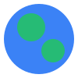
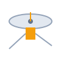
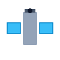
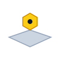

Artificial Satellites
Human-made machines launched into orbit around Earth or other celestial bodies to gather data, relay communications, and observe the universe.

Communication Satellites
Stationed primarily in Geostationary Orbit (35,786 km) or mega-constellations in LEO, relaying voice, television, and broadband internet data globally.
Navigation Satellites
Constellations such as GPS, Galileo, and NavIC transmit precise atomic-clock timing signals to compute exact geographic position and altitude on Earth.
Weather & Earth Observation
Equipped with multispectral imagers and radiometers to track tropical cyclones, map polar ice changes, monitor forest cover, and forecast meteorology.

Hubble Space Telescope
Deployed in 1990 into Low Earth Orbit (540 km), Hubble observes in ultraviolet, visible, and near-infrared light free from atmospheric distortion.

James Webb (JWST)
Stationed 1.5 million km away at Sun-Earth Lagrange Point 2, featuring a 6.5-meter gold-plated mirror to peer into the universe's first light.
Space Stations (ISS & Tiangong)
Habitable orbital laboratories continuously crewed in low Earth orbit, conducting microgravity biology, physics, and materials research.
Solar Observatories
Spacecraft such as SOHO and Solar Orbiter monitoring coronal mass ejections, solar flare cycles, and the interplanetary solar wind.